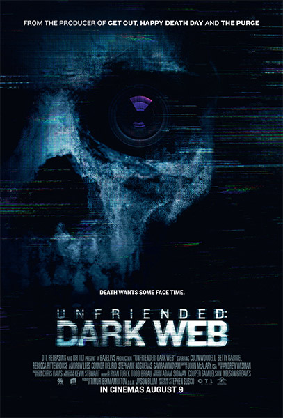
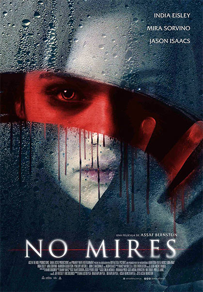
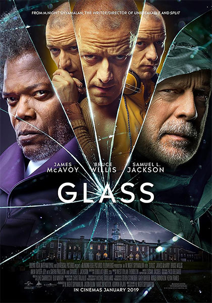
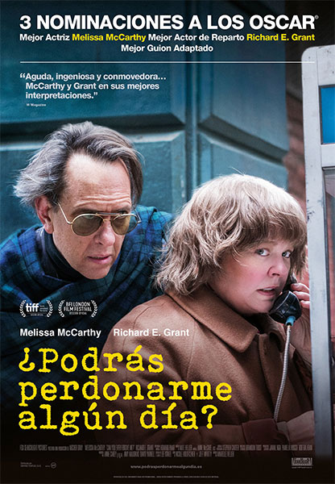

Titulo: Eliminar amigo 2
Sinopsi: Un joven queda en posesión de una nueva laptop pero pronto descubre que podría ser robada y que el anterior dueño no está solamente observándolo, sino que hará todo lo posible por recuperarla.
Género: Crimen | Terror | Misterio
Director: Stephen Susco
Elenco: Colin Woodell, Stephanie Nogueras, Betty Gabriel, Rebecca Rittenhouse, Andrew Lees, Connor Del Rio, Savira Windyani, Douglas Tait, Bryan Adrian, Chelsea Alden

Titulo: No mires
Sinopsi: Maria, una solitaria estudiante de 18 años, cambia de lugar con su solidaria y malvada gemela que descubre en el reflejo del espejo, pero su nueva libertad desata sentimientos reprimidos.
Género: Terror | Suspenso
Director: Assaf Bernstein
Elenco: India Eisley, Jason Isaacs, Mira Sorvino, Penelope Mitchell, John C. MacDonald, Harrison Gilbertson, Kristen Harris, Kiera Johnson, Michal Bernstein

Titulo: Glass
Sinopsi: El guardia de seguridad David Dunn usa sus habilidades sobrenaturales para rastrear a Kevin Wendell Crum, un hombre perturbado que tiene 24 personalidades.
Género: Drama | Ciencia ficción | Suspenso
Director: M. Night Shyamalan
Elenco: James McAvoy, Bruce Willis, Samuel L. Jackson, Anya Taylor-Joy, Sarah Paulson, Spencer Treat Clark, Charlayne Woodard, Luke Kirby, Adam David Thompson

Titulo: ¿Podrás perdonarme?
Sinopsi: Lee Israel es una escritora con problemas financieros porque ya no logra ser publicada, entonces convierte su forma de arte en engaño. Basada en las memorias del mismo nombre
Género: Biografía | Comedia | Crimen
Director: Marielle Heller
Elenco: Melissa McCarthy, Richard E. Grant, Dolly Wells, Ben Falcone, Gregory Korostishevsky, Jane Curtin, Stephen Spinella, Christian Navarro, Erik LaRay Harvey